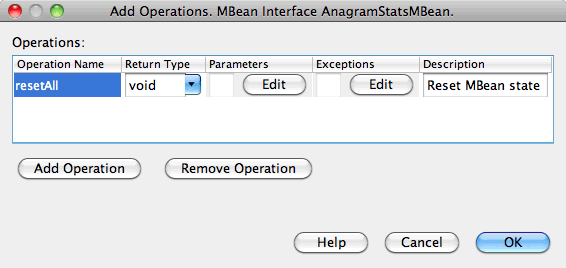

Apache NetBeans
Apache NetBeansJust released!
Добавление инструментов Java Management Extensions (JMX) в приложение Java
| This tutorial needs a review. You can open a JIRA issue, or edit it in GitHub following these contribution guidelines. |
- Упражнения по темам руководства
- Предпосылки
- Программное обеспечение, требуемое для работы с данным учебным курсом.
- Ресурсы
- Упражнение 1. Создание проекта игрового приложения Anagram в NetBeans
- Упражнение 2. Создание компонента AnagramsStats JMX Standard MBean и его управляющего интерфейса
- Упражнение 3. Добавление атрибутов, операций и уведомлений в компонент AnagramsStats JMX Standard MBean
- Упражнение 4. Добавление кода реализации в компонент AnagramsStats JMX Standard MBean
- Упражнение 5. Установление связей между управляющим компонентом и приложением
- Упражнение 6. Запуск игры Anagram с помощью консоли JConsole
- См. также
Ожидаемая продолжительность: 60 минут
Модуль NetBeans JMX Wizard интегрирует технологию JMX в рабочие процессы IDE NetBeans. Этот модуль позволяет быстро разрабатывать управляющие приложения, добавлять функции управления в существующие приложения, разрабатывать приложения-диспетчеры и контролировать состояние виртуальной машины.
Это руководство содержит инструкции по добавлению функций управления в существующее приложение (образец игрового приложения Anagrams в NetBeans). Сначала необходимо создать неуправляемый Java-проект Anagram. Затем с помощью мастеров JMX создается 90% функций управления. После этого реализуется управляющее поведение, специфичное для данного приложения. Наконец, осуществляется виртуализация Anagram MBeans с помощью функции 'Выполнение/отладка проекта' в консоли JConsole.
Упражнения по темам руководства

Figure 1. Содержимое этой страницы применимо к IDE NetBeans 7.2, 7.3, 7.4 и 8.0
-
Упражнение 1. Создание проекта игрового приложения Anagram в NetBeans
-
Упражнение 2. Создание компонента AnagramsStats JMX Standard MBean и его управляющего интерфейса
-
Упражнение 4. Добавление кода реализации в компонент AnagramsStats JMX Standard MBean
-
Упражнение 5. Установление связей между управляющим компонентом и приложением
-
Упражнение 6. Запуск игры Anagram с помощью консоли JConsole
Предпосылки
Предполагается, что читатель этого руководства обладает базовыми знаниями следующих технологий или опытом программирования с их использованием:
-
Технология JMX: онлайн-документация по JMX
-
Технология Java: + Краткий обзор технологий Java SE+
-
IDE NetBeans
Знакомство с + Мониторингом и управлением для платформы Java+ будет преимуществом.
Программное обеспечение, требуемое для работы с данным учебным курсом.
Для работы с этим учебным курсом на компьютере должно быть установлено следующее программное обеспечение.
| Программное обеспечение или ресурс | Требуемая версия |
|---|---|
Версии 7.2, 7.3, 7.4, 8.0, пакет для Java |
|
версия 7 или 8 |
|
Подключаемый модуль JMX |
Доступен в центре обновлений NetBeans |
Подключаемый модуль JConsole |
Доступен в центре обновлений NetBeans |
Чтобы установить подключаемые модули JMX и JConsole, выберите Сервис > Подключаемые модули и загрузите модули в центре обновлений NetBeans.
Ресурсы
-
Справка NetBeans (Справка > Разделы справки > JMX). Эту справку также можно открыть в любом мастере.
Упражнение 1. Создание проекта игрового приложения Anagram в NetBeans
Цель этого упражнения заключается в создании работоспособного проекта Java. Игра Anagram является приложением Swing. Приложение отображает слово с перестановленными в случайном порядке буквами и предлагает пользователю расшифровать эту анаграмму.
-
Выберите команду "Файл" > "Создать проект" (CTRL+SHIFT+N).
-
Выберите категорию Образцы > Java.
-
Выберите проект "Anagram Game". Нажмите 'Далее'.
-
На панели 'Имя и местоположение проекта' укажите местоположение файлов проекта или оставьте указанное по умолчанию местоположение без изменений. Выберите параметр 'Установить как главный проект' (если он не выбран). Это упростит вам работу на следующих этапах. Нажмите 'Готово'.
При нажатии на кнопку 'Готово' IDE создает проект Anagram Game, который отображается в окне 'Проекты'.
-
Щелкните проект AnagramGame правой кнопкой мыши и выберите 'Свойства'.
-
Выберите категорию 'Исходные файлы' и убедитесь, что в качестве формата исходных/двоичных файлов выбран JDK 7 или JDK 8. Нажмите OK.
Примечание. Возможность выбора JDK 7 или JDK 8 доступна, если проект AnagramGame создан на платформе Java соответствующей версии (JDK 7 или JDK 8). Версию платформы Java для проекта AnagramGame можно изменить в категории 'Библиотеки' в окне 'Свойства'.
-
Щелкните узел проекта Anagram Game правой кнопкой мыши и выберите 'Выполнить'.
При выборе команды 'Выполнить' IDE осуществляет сборку и запуск приложения Anagram.
Упражнение 2. Создание компонента AnagramsStats JMX Standard MBean и его управляющего интерфейса
Цель этого упражнения заключается в создании скелета JMX Standard MBean, который состоит из класса реализации и управляющего интерфейса.
Чтобы создать скелет компонента JMX Standard MBean, выполните следующие действия.
-
Убедитесь, что проект Anagram Game установлен в качестве основного проекта.
-
Выберите Файл> Создать файл (Ctrl-N).
-
В категории JMX выберите Standard MBean. Нажмите кнопку "Далее". image::images/jmx-newfile.png[title="Тип файла Standard MBean в мастере создания файлов"]
-
На панели 'Имя и местоположение' введите следующие данные:
-
Имя класса:
AnagramsStats -
Местоположение: Исходные пакеты (по умолчанию)
-
Пакет:
com.toy.anagrams.mbeans -
Описание:
Мониторинг и управление для Anagrams Game
-

-
Нажмите 'Готово'.
При нажатии на кнопку 'Готово' создаются класс MBean AnagramsStats и интерфейс MBean AnagramsStatsMBean в пакете com.toy.anagrams.mbeans проекта AnagramGame. Теперь у вас есть несколько пустых скелетов, которые вы заполните данными в следующем упражнении.
Упражнение 3. Добавление атрибутов, операций и уведомлений в компонент AnagramsStats JMX Standard MBean
Цель этого упражнения заключается в заполнении созданного скелета MBean функциональными элементами, чтобы этот компонент мог отслеживать время, затраченное пользователем на расшифровку новой анаграммы, и отправлять уведомления JMX при каждой расшифровке анаграммы.
В состав компонента MBean входит следующее:
-
Два атрибута с именами
LastThinkingTimeиNumResolvedAnagrams -
Операция с именем
resetAll. -
Уведомление типа
AttributeChangeNotification. Это уведомление отправляется при обновлении атрибутаLastThinkingTime.
Чтобы заполнить скелет MBean функциональными элементами, выполните следующие действия.
-
Откройте файл реализации MBean,
AnagramsStats.java, в редакторе NetBeans. -
Щелкните в редакторе правой кнопкой мыши и выберите JMX > Добавить атрибуты MBean в контекстном меню.
-
Добавьте атрибут
LastThinkingTime. Для этого нажмите кнопку 'Добавить атрибут' и введите следующие данные.-
Имя атрибута:
LastThinkingTime -
Тип: int
-
Доступ: ReadOnly
-
Описание:
Время, затраченное на расшифровку последней анаграммы
-
Примечание. Не нажимайте кнопку OK!
-
Нажмите кнопку 'Добавить атрибут' еще раз и добавьте атрибут
NumSolvedAnagrams. Нажмите OK.-
Имя атрибута:
NumSolvedAnagrams -
Тип: int
-
Доступ: ReadOnly
-
Описание:
Количество расшифрованных анаграмм
-

Код, необходимый для предоставления атрибутов LastThinkingTime и NumSolvedAnagrams , создается как в классе MBean AnagramsStats , так и в его интерфейсе.
Здесь вы видите объявление частных полей и общие методы getter. При более пристальном рассмотрении представления 'Члены' и созданного кода можно заметить, что методы getLastThinkingTime и getNumSolvedAnagrams созданы как в классе AnagramsStats , так и в его интерфейсе AnagramsStatsMBean . Также были созданы частные поля lastThinkingTime и numSolvedAnagrams , имеющие тип int . Эти поля будут использоваться для хранения фактических значений атрибутов.
Теперь необходимо добавить еще несколько атрибутов для отслеживания минимального и максимального затраченного времени и текущей анаграммы, которая отображается для пользователя.
-
Щелкните в редакторе правой кнопкой мыши и выберите JMX > Добавить атрибуты MBean в контекстном меню.
-
Нажмите кнопку 'Добавить атрибут' и добавьте следующие атрибуты.
Имя атрибута |
Тип |
Доступ |
Описание |
MinThinkingTime |
int |
ReadOnly |
Минимальное время, затраченное на расшифровку анаграммы |
MaxThinkingTime |
int |
ReadOnly |
Максимальное время, затраченное на расшифровку анаграммы |
CurrentAnagram |
String |
ReadOnly |
Текущая анаграмма для расшифровки |
Диалоговое окно должно выглядеть примерно так, как показано на рисунке.

Figure 2. Диалоговое окно 'Добавление атрибута' после добавления еще 3 атрибутов
Примечание. Обратите внимание, что в диалоговом окне отображается список уже созданных атрибутов.
-
Нажмите ОК, чтобы сохранить изменения.
-
Щелкните в редакторе правой кнопкой мыши и выберите JMX > Добавить операции MBean в контекстном меню.
-
Нажмите кнопку 'Добавить операцию', добавьте операцию
resetAll()и укажите следующие данные. Нажмите OK.-
Имя операции:
resetAll -
Тип возвращаемого значения:
void -
Параметры: (оставьте это поле пустым)
-
Исключения: (оставьте это поле пустым)
-
Описание:
Сброс состояния MBean
-

Figure 3. Добавление операции resetAll в диалоговом окне 'Добавление операции'
После нажатия на кнопку ОК код, необходимый для предоставления операции resetAll , будет создан как в классе MBean AnagramsStats , так и в его интерфейсе.
-
Щелкните в редакторе правой кнопкой мыши и выберите JMX > Реализовать интерфейс NotificationEmitter в контекстном меню.
-
В диалоговом окне 'Реализация интерфейса NotificationEmitter' введите следующие данные.
-
Выберите параметр 'Создать делегирование для транслятора'. Все методы, объявленные интерфейсом
NotificationEmitter, будут реализованы путем делегирования транслятору уведомлений. Транслятор уведомлений упрощает отправку уведомлений компонентом MBean. -
Выберите параметр 'Создать частный порядковый номер и модификатор'. Будет создан код для обработки уникального значения порядкового номера, который будет присваиваться каждому отправленному уведомлению.
-
Нажмите 'Добавить уведомление'. В таблице 'Уведомления' укажите следующие данные.
-
Класс уведомления:
javax.management.AttributeChangeNotification -
Тип уведомления: (автоматически устанавливается значение
ATTRIBUTE_CHANGE) -
Описание:
Анаграмма расшифрована
-

Figure 4. Добавление уведомления об изменениях в диалоговом окне 'Реализация интерфейса Implement NotificationEmitter'
Нажмите OK.
Код, необходимый для реализации интерфейса NotificationEmitter , будет создан в классе MBean AnagramsStats . Как видите, созданная реализация делегирует обработку уведомлений классу NotificationBroadcasterSupport .
-
Сохраните изменения.
Выполнив это упражнение, вы научились добавлять атрибуты, операции и функцию отправки уведомлений в компонент MBean с помощью модуля JMX Wizard. Этап заполнения скелета MBean функциональными элементами, необходимыми для предоставления управляющих данных, завершен. Теперь необходимо добавить внутреннюю логику в реализацию класса MBean AnagramsStats и установить связь между компонентом MBean и приложением Anagram.
Упражнение 4. Добавление кода реализации в компонент AnagramsStats JMX Standard MBean
Цель этого упражнения заключается в добавлении внутренней логики в реализацию класса MBean AnagramsStats .
Чтобы добавить код реализации, выполните следующие действия.
-
В атрибутах уже объявлены частные поля, и в их методы getter ничего добавлять не нужно.
-
Нужно реализовать метод
resetAll(). Созданное тело метода не содержит элементов. При вызове методаresetAll()все счетчики возвращаются в значение 0. Добавьте следующие строки кода (выделены полужирным шрифтом) в тело методаresetAll():
public void resetAll() {
*minThinkingTime = 0;
maxThinkingTime = 0;
lastThinkingTime = 0;
numSolvedAnagrams = 0;*
}-
Также потребуется код реализации, который будет выполнять следующие действия:
-
вычислять время, затраченное пользователем на расшифровку последней анаграммы;
-
вычислять минимальное и максимальное затраченное время;
-
увеличивать значение счетчика на 1 при расшифровке очередной анаграммы,
-
определять текущую анаграмму;
-
создавать и отправлять уведомление при расшифровке анаграммы.
-
С этой целью необходимо добавить частное поле startTime , в котором будет храниться значение времени, когда пользователю была показана последняя анаграмма, два метода: startThinking() и stopThinking() для выполнения вышеперечисленных операций и метод setCurrentAnagram() .
Добавьте следующий код в файл AnagramsStats.java , например, в конце реализации класса.
/*
* Methods exposed to Anagrams application to feed management with data.
*/
//Stores the time at which a new anagram is proposed to the user.
private long startTime;
/**
* A new Anagram is proposed to the user: store current time.
*/
public void startThinking() {
startTime = System.currentTimeMillis();
}
/**
* An Anagram has been resolved.
*/
public void stopThinking() {
//Update the number of resolved anagrams
numSolvedAnagrams++;
// Compute last, min and max thinking times
lastThinkingTime = (int) (System.currentTimeMillis() - startTime) / 1000 ;
minThinkingTime = (lastThinkingTime < minThinkingTime || minThinkingTime == 0) ?
lastThinkingTime :
minThinkingTime;
maxThinkingTime = (lastThinkingTime > maxThinkingTime) ?
lastThinkingTime :
maxThinkingTime;
//Create a JMX Notification
Notification notification = new Notification(AttributeChangeNotification.ATTRIBUTE_CHANGE,
this,
getNextSeqNumber(),
"Anagram solved: " + currentAnagram);
// Send a JMX notification.
broadcaster.sendNotification(notification);
}
/**
* Set latest anagram which has been computed by the Anagram application
*/
public void setCurrentAnagram(String currentAnagram) {
this.currentAnagram = currentAnagram;
}Обратите внимание, что эти три метода, startThinking() , stopThinking() и setCurrentAnagram() , не являются частью управляющего интерфейса MBean, так как они не объявлены в интерфейсе AnagramsStatsMBean . Но все эти методы являются общими, потому что они будут вызываться приложением Anagram и сообщать компоненту MBean о каждом отображении новой анаграммы, времени ее расшифровки и о том, какая анаграмма является текущей. Поэтому вышеуказанные методы являются неотъемлемой частью связи между приложением и компонентом MBean.
Также обратите внимание на то, что при каждой расшифровке анаграммы отправляется уведомление JMX типа ATTRIBUTE_CHANGE .
Реализация компонента MBean завершена. Используя информацию этого раздела, вы добавили код и методы для выполнения следующих действий:
-
внутренние обновления состояния MBean
-
вызовы из приложения
-
отправка уведомлений JMX
Упражнение 5. Установление связей между управляющим компонентом и приложением
Цель этого упражнения заключается в добавлении в приложение Anagram кода, который позволит приложению обращаться к компоненту MBean и передавать ему управляющие данные.
Выполните следующие действия:
-
Откройте файл
Anagrams.javaв редакторе.
Класс Anagrams в пакете com.toy.anagrams.ui является основным классом приложения Anagram. Файл открывается в режиме конструирования, так как класс Anagrams также является классом пользовательского интерфейса.
-
Нажмите кнопку 'Исходный код' в верхней части окна редактора, чтобы открыть класс в режиме редактирования исходного кода.
-
Добавьте пустой частный метод
initManagement()в классAnagramsпосле конструктораAnagrams.
/**
* JMX initialization:
* Create and register Anagrams MBean in Platform MBeanServer.
* Initialize thinking time and current anagram.
*/
private void initManagement() throws Exception {
}-
Добавьте следующий вызов метода
initManagement()в конструктор классаAnagramsперед закрывающей фигурной скобкой, обозначающей конец конструктора.
//JMX Management initialization
initManagement();Также вам потребуется добавить фразу throws Exception в конструктор Anagrams() и заключить выражение new Anagrams().setVisible(true); в конструкцию try-catch в методе Main() для компилирования. Кроме того, вы можете увидеть специальный символ предложения в левом поле редактора. Вы можете разместить курсор в строке кода и нажать Alt-Enter для вызова подсказки кода в исходном редакторе.

Figure 5. Подсказка кода для добавления try-catch
На этом этапе должен получиться следующий результат [нажмите, чтобы увеличить изображение]:

-
Теперь необходимо добавить код регистрации MBean в метод
initManagement()с помощью мастера регистрации MBean модуля JMX:
В файле Anagrams.java , открытом в редакторе исходного кода, щелкните правой кнопкой мыши внутри тела метода initManagement() , выберите меню JMX и команду 'Создать регистрацию MBean…'. На отобразившейся панели 'Создание экземпляра и регистрация MBean' оставьте выбранным параметр 'Зарегистрировать существующий MBean', нажмите кнопку 'Обзор', выберите класс MBean AnagramsStats и нажмите ОК на панели 'Обзор'. На экране отобразится следующее:

Автоматически указанное имя объекта MBean и конструктор менять не нужно. Нажмите ОК. В теле метода initManagement() появится созданный код регистрации MBean.
Рекомендации по именованию компонентов MBean
-
При именовании компонента MBean используйте ключ "
type=" в поле 'Имя объекта'. В качестве значения этого ключа должен быть указан класс MBean (в данном случаеAnagramsStats). -
При создании единичного компонента MBean (когда в приложении имеется только один экземпляр MBean) этого ключа достаточно для правильного указания имени.
-
Не следует создавать слишком много доменных имен. Используйте имена пакетов Java вашего приложения. Также можно использовать имя домена по умолчанию. Если имя домена не указано перед разделителем
ObjectName":", приложение будет неявно ссылаться на домен по умолчанию.
Эти рекомендации помогут вам создавать более стандартизированные компоненты MBeans.
Таким образом, в элементе ObjectName , созданном по умолчанию, в соответствии с приведенными выше рекомендациями будет указано следующее: com.toy.anagrams.mbeans:type=AnagramsStats
Для выполнения упражнения потребуется еще одно дополнительное действие. Допустим, что требуется предоставить приложению доступ к классу, реализующему управляющий интерфейс ( AnagramsStats ). Это не обязательное требование, но его можно с успехом применить в случае, когда приложению необходимо принудительно передать данные компоненту MBean. В этом случае методы startThinking() , stopThinking() и setCurrentAnagram() не являются управляющими методами, а используются приложением Anagram для передачи компоненту MBean уведомления о произошедших событиях. В свою очередь MBean обновляет свое состояние. Чтобы сделать класс AnagramsStats доступным в классе пользовательского интерфейса Anagrams , необходимо, чтобы класс Anagrams непосредственно ссылался на экземпляр MBean AnagramsStats .
Следовательно, нужно внести изменения в файл Anagrams.java .
-
Добавьте в класс
Anagramsследующее частное поле.
// Reference to the AnagramsStats MBean
private AnagramsStats mbean;-
Инициализируйте ссылку на MBean
AnagramsStatsв методеinitManagement(), изменив созданный код регистрации MBean следующим образом:
private void initManagement() throws Exception {
try { // Register MBean in Platform MBeanServer
*mbean = new AnagramsStats();*
ManagementFactory.getPlatformMBeanServer().
registerMBean(*mbean*,
new ObjectName("com.toy.anagrams.mbeans:type=AnagramsStats"));
} catch (JMException ex) {
*ex.printStackTrace();*
}-
Инициализируйте состояние MBean
AnagramsStats. При запуске приложения Anagrams немедленно отображается анаграмма, поэтому необходимо передать компоненту MBean значение строкового ресурса анаграммы и начать отсчет времени. Скопируйте и вставьте указанные ниже строки в конец методаinitManagement():
// When the Anagrams game is first displayed, a word is proposed to the user.
// We must start time computing and set the current anagram
mbean.startThinking();
mbean.setCurrentAnagram(wordLibrary.getScrambledWord(wordIdx));На этом этапе должен получиться следующий результат [нажмите, чтобы увеличить изображение]:

Теперь нужно добавить код для контроля результатов расшифровки анаграмм.
-
Найдите метод
nextTrialActionPerformed()и вставьте следующий код в конец методаnextTrialActionPerformed().
//Update management statistics and values
try {
mbean.setCurrentAnagram(wordLibrary.getScrambledWord(wordIdx));
mbean.startThinking();
} catch (Exception e) {e.printStackTrace();}Каждый раз, когда пользователю предлагается новая анаграмма, код сообщает компоненту MBean, какая это анаграмма, и компонент начинает отсчет времени.
-
Найдите метод
guessedWordActionPerformed()и добавьте в него следующие строки. Сохраните изменения.
//Update management stats
try {
mbean.stopThinking();
} catch(Exception e) {e.printStackTrace();}Метод stopThinking() в компоненте MBean вызывается при каждой успешной расшифровке анаграммы.
Теперь код в редакторе должен выглядеть следующим образом [нажмите, чтобы увеличить изображение]:

Теперь управляющий слой JMX соединен со слоем приложения. Далее необходимо выполнить сборку и запуск приложения Anagrams и рассмотреть предоставленные управляющие данные в графическом интерфейсе JConsole.
Упражнение 6. Запуск игры Anagram с помощью консоли JConsole
Выполнив это упражнение, вы узнаете, как осуществляется сборка и запуск проекта и как подключить консоль JConsole для визуализации состояния JVM и приложения MBeans.
Чтобы запустить приложение и просмотреть управляющие данные, выполните следующие действия.
-
Все вышеперечисленные задачи можно выполнить в одно действие: достаточно нажать кнопку 'Запуск основного проекта с функциями мониторинга и управления' на панели инструментов ( image::images/run-project24.png[title="Кнопка 'Запустить основной проект с функциями мониторинга и управления'"])
Также эту команду можно выбрать в меню 'Выполнить' в главном меню.
Примечание. При первой сборке и запуске приложения в среде IDE отображается предупреждение о том, что файлы build.xml будут обновлены. Это диалоговое окно можно закрыть, нажав кнопку ОК.

Figure 6. Предупреждение при первом мониторинге приложения
За ходом выполнения можно следить в окне 'Результаты'.

Figure 7. Окно 'Результаты', отображающее процесс
IDE выполнит сборку и запуск игры Anagram и автоматически откроет окно JConsole.

Figure 8. Игра Anagram
Примечания. Вы можете увидеть предупреждение о сбое подключения на консоли управления и мониторинга Java при попытке консоли подключиться к процессу Anagram Game. Для этой учебной программы вы можете нажать Ненадежно, когда вам будет предложено разрешить подключение.
-
В окне JConsole перейдите на вкладку MBeans.
-
В дереве в левой части окна разверните все узлы в структуре
com.toy.anagrams.mbeans. image::images/jmx-jconsole-mbeans1.png[title="Вкладка MBeans с узлом AnagramsStats"] -
Выберите узел 'Уведомления' и нажмите кнопку 'Подписаться' в нижней части экрана. Теперь JConsole будет получать уведомления при каждой расшифровке анаграммы.
-
В окне игры Anagram расшифруйте первые три или четыре анаграммы.
Расшифровки анаграмм (abstraction, ambiguous, arithmetic, backslash…) содержатся в классе WordLibrary .
-
В окне JConsole отображаются уведомления, полученные при расшифровке каждой из анаграмм.
-
Нажмите на узел 'Атрибуты' и обратите внимание на обновленные значения атрибутов: image::images/jmx-jconsole-mbeans3.png[title="Вкладка MBeans с узлом AnagramsStats"]
С интерфейсом JConsole и игрой Anagram можно проводить и другие эксперименты. Например, если вызвать управляющую операцию resetAll() , значения атрибутов MBean будут возвращены к 0.
*На этом всё! Поздравляем, вы отлично справились с заданиями! *
См. также
Дополнительные сведения см. в следующих разделах:

{kind=link}